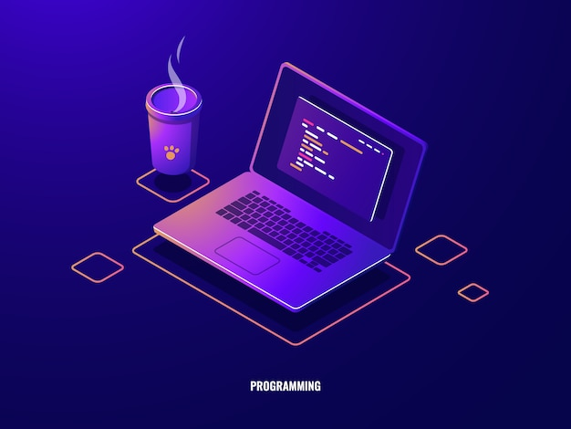

Admire Mukoko
Full Stack Software developer.
👉 admukoko@gmail.com | +263783797406
Tech stack
Java, C#, PHP, JavaScript
Spring Boot, Laravel,
Angular JS, Vue Js, Inertia Js
MySQL, MSSQL, Firebase
Work History / Experience
🚧 FULL STACK SOFTWARE DEVELOPER | STEWARD BANK
08/2021 - Present
Responsibilities
Software development and integrations using PHP and JAVA frameworks for workflow automations and process re-modelling.
- Software Systems Development,
- Integrations with Core Banking Systems (T24 and Postilion),
- Workflows Re-modelling,
- Frameworks Design,
- Software Testing (Integration and Unit Testing),
- User training and Quality Control.
- Load balancing and containerization in Distributed systems.
🚧 SOFTWARE DEVELOPER | SESFONT TECHNOLOGIES
07/2020 - 08/2021
Software and systems design using C# frameworks. Automating reporting processes and developing solutions which met standards set by regulatory bodies such as FIA/FIU
- Process Flows designs and modelling.
- Software development and design.
- Database design ( Generic Functions, Cursors, Store Procedures implementation for shared projects).
- Project management and monitoring.
- Systems deployment and maintenance
- Customer support and IOT Management.
- Architecture and Process flow diagrams design and implementation for automations.
🚧 ICT GRADUATE TRAINEE | AFC HOLDINGS
02-2020 - 07/2020
Designed and developed a current in use Internet Banking Platform, Tobacco Farmers Payments API Gateway.
- Designed & developed the payment processing gateway for farmers during the COVID-19 period in 2020.
- Customer Query Resolutions and Core Banking Systems monitoring and management.
- Salaries payment solution design and process flow modelling.